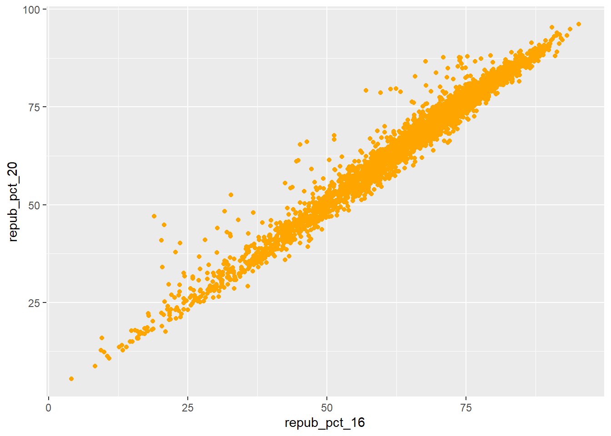
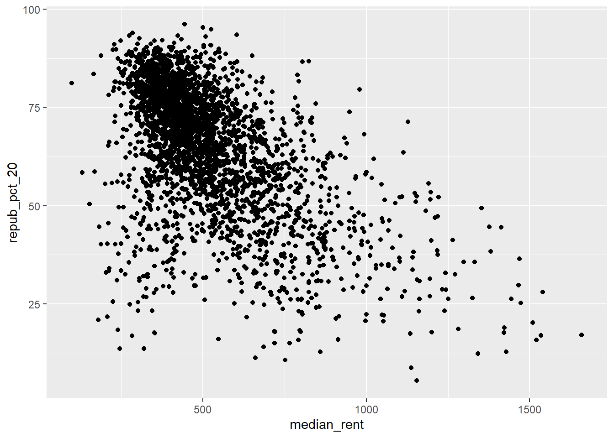
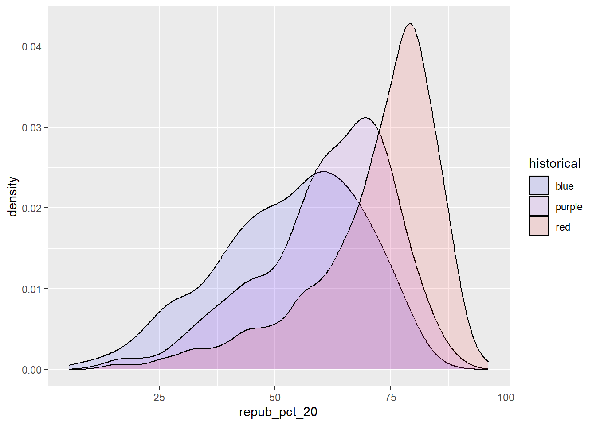

Use this file for practice with the bivariate viz in-class activity. Refer to the class website for details.
Code
# Import datasurvey <-read.csv("https://hash-mac.github.io/stat112site-s25/data/survey.csv")#survey# How many students have now filled out the survey?## 49 students have filled out survey# What type of variables do we have?## There is categorical and quantifiable variables#Exercise 1# Attach a package needed to use the ggplot functionlibrary(tidyverse)
Warning: package 'tidyverse' was built under R version 4.4.3
Warning: package 'ggplot2' was built under R version 4.4.2
Warning: package 'tibble' was built under R version 4.4.2
Warning: package 'tidyr' was built under R version 4.4.2
Warning: package 'readr' was built under R version 4.4.2
Warning: package 'purrr' was built under R version 4.4.2
Warning: package 'dplyr' was built under R version 4.4.2
Warning: package 'stringr' was built under R version 4.4.2
Warning: package 'forcats' was built under R version 4.4.2
Warning: package 'lubridate' was built under R version 4.4.2
── Attaching core tidyverse packages ──────────────────────── tidyverse 2.0.0 ──
✔ dplyr 1.1.4 ✔ readr 2.1.5
✔ forcats 1.0.0 ✔ stringr 1.5.1
✔ ggplot2 3.5.1 ✔ tibble 3.2.1
✔ lubridate 1.9.4 ✔ tidyr 1.3.1
✔ purrr 1.0.4
── Conflicts ────────────────────────────────────────── tidyverse_conflicts() ──
✖ dplyr::filter() masks stats::filter()
✖ dplyr::lag() masks stats::lag()
ℹ Use the conflicted package (<http://conflicted.r-lib.org/>) to force all conflicts to become errors
Code
# Make a ggplot bar graphggplot(survey, aes(x = fav_temp_c)) +geom_bar(color ="orange", fill ="blue")
Code
#histogram of temperature rangesggplot(survey, aes(x = fav_temp_c)) +geom_histogram(color ="orange", fill ="blue")
`stat_bin()` using `bins = 30`. Pick better value with `binwidth`.
`stat_bin()` using `bins = 30`. Pick better value with `binwidth`.
Code
#Exercise 2.2 Quantitative Variables: Run each chunk below to build up a a scatterplot of repub_pct_20 vs repub_pct_16 with different glyphs representing each county. Address or think about any prompts in the comments (#).# Set up the plotting frame# How does this differ than the frame for our histogram of repub_pct_20 alone?ggplot(elections, aes(y = repub_pct_20, x = repub_pct_16)) +geom_point()
Code
#change shape of the pointsggplot(elections, aes(y = repub_pct_20, x = repub_pct_16)) +geom_point(shape =3)
Code
#change color of the pointsggplot(elections, aes(y = repub_pct_20, x = repub_pct_16)) +geom_point(color ="orange")

Code
# Add a layer that represents each county by the state it's in# Take note of the geom and the info it needs to run!ggplot(elections, aes(y = repub_pct_20, x = repub_pct_16)) +geom_text(aes(label = state_abbr))
Code
#Exercise 4: Visualizing the trendggplot(elections, aes(y = repub_pct_20, x = repub_pct_16)) +geom_point() +geom_smooth()
`geom_smooth()` using method = 'gam' and formula = 'y ~ s(x, bs = "cs")'
Code
#Construct a new plot that contains the model smooth but does not include the individual point glyphs.ggplot(elections, aes(y = repub_pct_20, x = repub_pct_16)) +geom_smooth()
`geom_smooth()` using method = 'gam' and formula = 'y ~ s(x, bs = "cs")'
Code
#lm = linear model (makes a straight line of best fit, instead of default following the pattern with curves)ggplot(elections, aes(y = repub_pct_20, x = repub_pct_16)) +geom_point() +geom_smooth(method ="lm")
`geom_smooth()` using formula = 'y ~ x'
Code
# Scatterplot of repub_pct_20 vs median_rentggplot(elections, aes(y = repub_pct_20, x = median_rent)) +geom_point()

Code
# Scatterplot of repub_pct_20 vs median_ageggplot(elections, aes(y = repub_pct_20, x = median_age)) +geom_point()
Code
#Exercise 7: Quantitavive vs Categorical## Let’s explore the relationship between a county’s 2020 Republican support repub_pct_20 and the historical political trends in its state. In this case repub_pct_20 is quantitative, but historical is categorical# Side-by-side violin plotsggplot(elections, aes(y = repub_pct_20, x = historical)) +geom_violin()
#Exercise 8: Quantative vs Categorical - Intuition check# This includes the historical category in the density plot & distinguishes by category, but the later category overlaps and covers up the other two.#Also the colors of the historical category do not match the theme of what we are measuringggplot(elections, aes(x = repub_pct_20, fill = historical)) +geom_density()
Code
# scale_fill_manual changes the colors of the 3 historical variablesggplot(elections, aes(x = repub_pct_20, fill = historical)) +geom_density() +scale_fill_manual(values =c("blue", "purple", "red"))
Code
# What does alpha = 0.5 do?# Alpha changes transparency. 0 is most transparent, 1 is no transparency. 0.5 is half.ggplot(elections, aes(x = repub_pct_20, fill = historical)) +geom_density(alpha =0.1) +scale_fill_manual(values =c("blue", "purple", "red"))

Code
# Facet wrap different charts of the historical variable to compare side by side!ggplot(elections, aes(x = repub_pct_20, fill = historical)) +geom_density() +scale_fill_manual(values =c("blue", "purple", "red")) +facet_wrap(~ historical)
Code
# Let's try a similar grouping strategy with a histogram instead of density plot.# This is terrible because they stack up and makes data confusing.ggplot(elections, aes(x = repub_pct_20, fill = historical)) +geom_histogram(color ="white") +scale_fill_manual(values =c("blue", "purple", "red"))
`stat_bin()` using `bins = 30`. Pick better value with `binwidth`.
Code
#Exercise 11: Categorical vs Categorical – Intuition Check# Plot 1: adjust this to recreate the top plotggplot(elections, aes(x = historical, fill = winner_20)) +geom_bar() +scale_fill_manual(values =c("blue", "red"))
Code
# A faceted bar plotggplot(elections, aes(x = winner_20)) +geom_bar() +facet_wrap(~ historical)
Code
# A side-by-side bar plot# Note the new argument to geom_barggplot(elections, aes(x = historical, fill = winner_20)) +geom_bar(position ="dodge")
Code
# A proportional bar plot# Note the new argument to geom_barggplot(elections, aes(x = historical, fill = winner_20)) +geom_bar(position ="fill")
Code
#Exercise 13: Practice Import some daily weather data from a few locations in Australiaweather <-read.csv("https://mac-stat.github.io/data/weather_3_locations.csv")head(weather)
date location mintemp maxtemp rainfall evaporation sunshine
1 2020-01-01 Wollongong 17.1 23.1 0 NA NA
2 2020-01-02 Wollongong 17.7 24.2 0 NA NA
3 2020-01-03 Wollongong 19.7 26.8 0 NA NA
4 2020-01-04 Wollongong 20.4 35.5 0 NA NA
5 2020-01-05 Wollongong 19.8 21.4 0 NA NA
6 2020-01-06 Wollongong 18.3 22.9 0 NA NA
windgustdir windgustspeed winddir9am winddir3pm windspeed9am windspeed3pm
1 SSW 39 SSW SSE 20 15
2 SSW 37 S ENE 13 15
3 NE 41 NNW NNE 7 17
4 SSW 78 NE NNE 15 17
5 SSW 57 SSW S 31 35
6 NE 35 ESE NE 17 20
humidity9am humidity3pm pressure9am pressure3pm cloud9am cloud3pm temp9am
1 69 64 1014.9 1014.0 8 1 19.1
2 72 54 1020.1 1017.7 7 1 19.8
3 72 71 1017.5 1013.0 6 NA 23.4
4 77 69 1008.8 1003.9 NA NA 24.5
5 70 75 1018.9 1019.9 NA 7 20.7
6 71 71 1021.2 1018.2 NA NA 20.9
temp3pm raintoday risk_mm raintomorrow
1 22.9 No 0.0 No
2 23.6 No 0.0 No
3 25.7 No 0.0 No
4 26.7 No 0.0 No
5 20.0 No 0.0 No
6 22.6 No 0.8 No
Code
# How do 3pm temperatures (temp3pm) differ by location?ggplot(weather, aes(x = temp3pm,)) +geom_bar() +facet_wrap(~ location)
Warning: Removed 19 rows containing non-finite outside the scale range
(`stat_count()`).
Code
#bad code I did not complete exercise 13 yetggplot(weather, aes(x = temp3pm, fill = location)) +geom_bar(position ="fill")
Warning: Removed 19 rows containing non-finite outside the scale range
(`stat_count()`).
Source Code
---title: "Bivariate Viz"#February 3, 2025---Use this file for practice with the **bivariate viz** in-class activity. Refer to the class website for details.```{r}# Import datasurvey <-read.csv("https://hash-mac.github.io/stat112site-s25/data/survey.csv")#survey# How many students have now filled out the survey?## 49 students have filled out survey# What type of variables do we have?## There is categorical and quantifiable variables#Exercise 1# Attach a package needed to use the ggplot functionlibrary(tidyverse)# Make a ggplot bar graphggplot(survey, aes(x = fav_temp_c)) +geom_bar(color ="orange", fill ="blue")#histogram of temperature rangesggplot(survey, aes(x = fav_temp_c)) +geom_histogram(color ="orange", fill ="blue")#Example 3data.frame(temp_3pm =c(24, 26, 20, 15, 15, 15), temp_9am =c(14, 18, 15, 13, 11, 11))weather <-data.frame(temp_3pm =c(24, 26, 20, 15, 15, 0, 40, 60, 57, 44, 51, 75),location =rep(c("A", "B"), each =6))weatherggplot(weather, aes(x = temp_3pm)) +geom_density()weather <-data.frame(rain_today =c("no", "no", "no", "no", "yes", "no", "yes", "no", "yes", "yes", "no", "yes"),location =c(rep("A", 7), rep("B", 5))) weatherggplot(weather, aes(x = location)) +geom_bar()``````{r}# 4.3 Exercises (required)# Load dataelections <-read.csv("https://mac-stat.github.io/data/election_2020_county.csv")# Check it outhead(elections)#Part A: make a plot of the winner variable by counties in 2020.library(tidyverse)ggplot(elections, aes(x = winner_20)) +geom_bar()ggplot(elections, aes(x = repub_pct_20)) +geom_histogram()#Exercise 2.2 Quantitative Variables: Run each chunk below to build up a a scatterplot of repub_pct_20 vs repub_pct_16 with different glyphs representing each county. Address or think about any prompts in the comments (#).# Set up the plotting frame# How does this differ than the frame for our histogram of repub_pct_20 alone?ggplot(elections, aes(y = repub_pct_20, x = repub_pct_16)) +geom_point()#change shape of the pointsggplot(elections, aes(y = repub_pct_20, x = repub_pct_16)) +geom_point(shape =3)#change color of the pointsggplot(elections, aes(y = repub_pct_20, x = repub_pct_16)) +geom_point(color ="orange")# Add a layer that represents each county by the state it's in# Take note of the geom and the info it needs to run!ggplot(elections, aes(y = repub_pct_20, x = repub_pct_16)) +geom_text(aes(label = state_abbr))#Exercise 4: Visualizing the trendggplot(elections, aes(y = repub_pct_20, x = repub_pct_16)) +geom_point() +geom_smooth()#Construct a new plot that contains the model smooth but does not include the individual point glyphs.ggplot(elections, aes(y = repub_pct_20, x = repub_pct_16)) +geom_smooth()#lm = linear model (makes a straight line of best fit, instead of default following the pattern with curves)ggplot(elections, aes(y = repub_pct_20, x = repub_pct_16)) +geom_point() +geom_smooth(method ="lm")# Scatterplot of repub_pct_20 vs median_rentggplot(elections, aes(y = repub_pct_20, x = median_rent)) +geom_point()# Scatterplot of repub_pct_20 vs median_ageggplot(elections, aes(y = repub_pct_20, x = median_age)) +geom_point()#Exercise 7: Quantitavive vs Categorical## Let’s explore the relationship between a county’s 2020 Republican support repub_pct_20 and the historical political trends in its state. In this case repub_pct_20 is quantitative, but historical is categorical# Side-by-side violin plotsggplot(elections, aes(y = repub_pct_20, x = historical)) +geom_violin()# Side-by-side boxplots (defined below)ggplot(elections, aes(y = repub_pct_20, x = historical)) +geom_boxplot()#Exercise 8: Quantative vs Categorical - Intuition check# This includes the historical category in the density plot & distinguishes by category, but the later category overlaps and covers up the other two.#Also the colors of the historical category do not match the theme of what we are measuringggplot(elections, aes(x = repub_pct_20, fill = historical)) +geom_density()# scale_fill_manual changes the colors of the 3 historical variablesggplot(elections, aes(x = repub_pct_20, fill = historical)) +geom_density() +scale_fill_manual(values =c("blue", "purple", "red"))# What does alpha = 0.5 do?# Alpha changes transparency. 0 is most transparent, 1 is no transparency. 0.5 is half.ggplot(elections, aes(x = repub_pct_20, fill = historical)) +geom_density(alpha =0.1) +scale_fill_manual(values =c("blue", "purple", "red"))# Facet wrap different charts of the historical variable to compare side by side!ggplot(elections, aes(x = repub_pct_20, fill = historical)) +geom_density() +scale_fill_manual(values =c("blue", "purple", "red")) +facet_wrap(~ historical)# Let's try a similar grouping strategy with a histogram instead of density plot.# This is terrible because they stack up and makes data confusing.ggplot(elections, aes(x = repub_pct_20, fill = historical)) +geom_histogram(color ="white") +scale_fill_manual(values =c("blue", "purple", "red"))#Exercise 11: Categorical vs Categorical – Intuition Check# Plot 1: adjust this to recreate the top plotggplot(elections, aes(x = historical, fill = winner_20)) +geom_bar() +scale_fill_manual(values =c("blue", "red"))# A faceted bar plotggplot(elections, aes(x = winner_20)) +geom_bar() +facet_wrap(~ historical)# A side-by-side bar plot# Note the new argument to geom_barggplot(elections, aes(x = historical, fill = winner_20)) +geom_bar(position ="dodge")# A proportional bar plot# Note the new argument to geom_barggplot(elections, aes(x = historical, fill = winner_20)) +geom_bar(position ="fill")#Exercise 13: Practice Import some daily weather data from a few locations in Australiaweather <-read.csv("https://mac-stat.github.io/data/weather_3_locations.csv")head(weather)# How do 3pm temperatures (temp3pm) differ by location?ggplot(weather, aes(x = temp3pm,)) +geom_bar() +facet_wrap(~ location)#bad code I did not complete exercise 13 yetggplot(weather, aes(x = temp3pm, fill = location)) +geom_bar(position ="fill")```